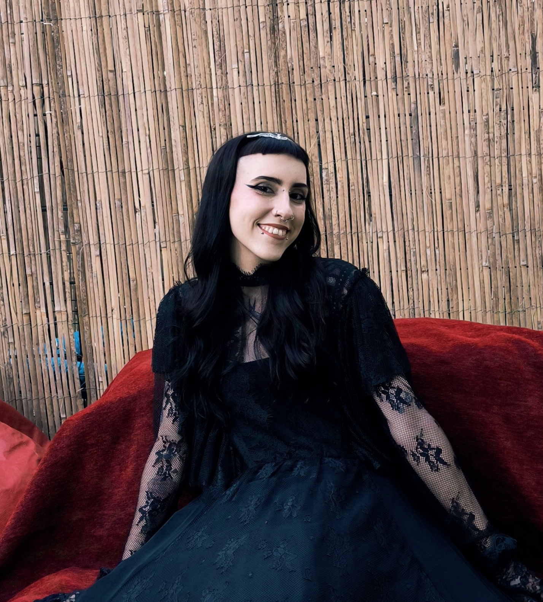

Sobre mim
I am a certified Animal-Assisted Therapist (AAT) specializing in therapeutic interventions with cats and horses. In my freelance practice, I provide feline-assisted therapy focused on emotional comfort, anxiety reduction, grounding, and relationship-building. I also deliver equine-assisted therapy at ANIMALIA – World of Experiences, where I support clients in developing confidence, emotional regulation, body awareness, and trust through structured interactions with their therapy horses.
Alongside my professional practice, I am currently in the first year of my Bachelor’s Degree in Psychology, expanding my academic foundation in mental health, human behavior, and therapeutic models. This combination of academic development and hands-on therapeutic work allows me to design thoughtful, evidence-informed interventions that respond to the emotional and psychological needs of each client.
My mission is to create safe, compassionate, and empowering therapeutic experiences for individuals of all ages, while continuing to grow professionally and contribute to the advancement of animal-assisted therapeutic practices.
Experiência Profissional
O meu percurso profissional tem sido guiado pela convicção de que o desenvolvimento infantil atinge o seu potencial máximo quando aliado ao equilíbrio e à serenidade do mundo natural. Atualmente, foco a minha intervenção no contexto privilegiado de uma quinta pedagógica, onde as terapias assistidas por animais assumem um papel central. Através desta metodologia, facilito processos de regulação emocional e social, permitindo que cada criança encontre no contacto com os animais uma via única para expressar sentimentos e desenvolver competências motoras e cognitivas de forma lúdica, mas com um propósito clínico rigoroso.
Complemento esta prática diária com o meu percurso académico na área da Psicologia, uma escolha que reflete o meu compromisso com uma intervenção fundamentada e atualizada. Estar no terreno enquanto aprofundo os conhecimentos científicos da mente humana permite-me olhar para cada criança de forma holística, adaptando as estratégias terapêuticas às necessidades específicas de cada etapa do crescimento. Acredito que o ambiente da quinta, longe das paredes de um consultório convencional, oferece a liberdade necessária para que o progresso aconteça ao ritmo da natureza e de cada indivíduo.
O meu objetivo é, por isso, proporcionar um espaço de segurança e descoberta onde o rigor da psicologia e a pureza do mundo animal se fundem para promover o bem-estar e a felicidade das crianças e das suas famílias.
Formação acadêmica
O meu compromisso com o apoio ao desenvolvimento infantil reflete-se num percurso académico contínuo e dedicado, focado na compreensão profunda da mente e do comportamento humano. Atualmente, encontro-me a frequentar a licenciatura em Psicologia, um passo fundamental que me permite alicerçar a prática clínica em modelos teóricos sólidos e em evidência científica atualizada. Esta formação académica é o pilar que sustenta todas as minhas intervenções, garantindo que o acompanhamento de cada criança é feito com o rigor ético e a responsabilidade que a área da saúde mental exige.
Ao longo do meu percurso, tenho procurado complementar a base teórica com estudos e formações específicas sobre a relação entre o ser humano e a natureza, bem como sobre os benefícios terapêuticos da interação animal. Acredito que a psicologia deve ser uma ciência viva e adaptável, pelo que invisto constantemente na atualização de conhecimentos que me permitam interpretar as necessidades emocionais das crianças de forma mais precisa.
Esta dualidade entre a aprendizagem académica e a experiência prática na quinta pedagógica permite-me desenvolver uma visão crítica e sensível, assegurando que cada estratégia adotada tem uma fundamentação científica robusta e um objetivo de bem-estar claramente definido.